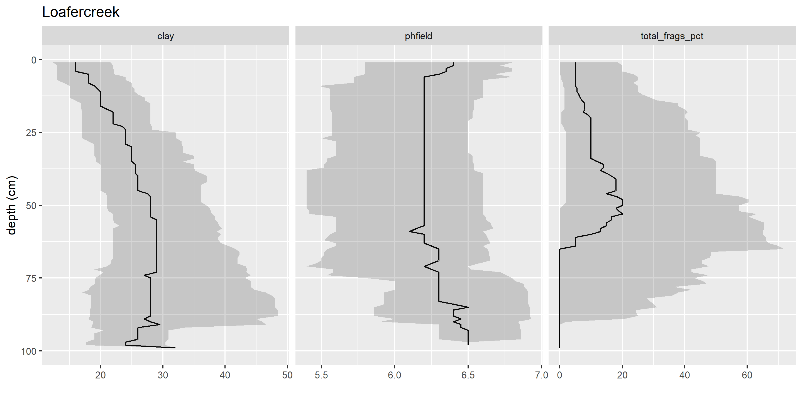
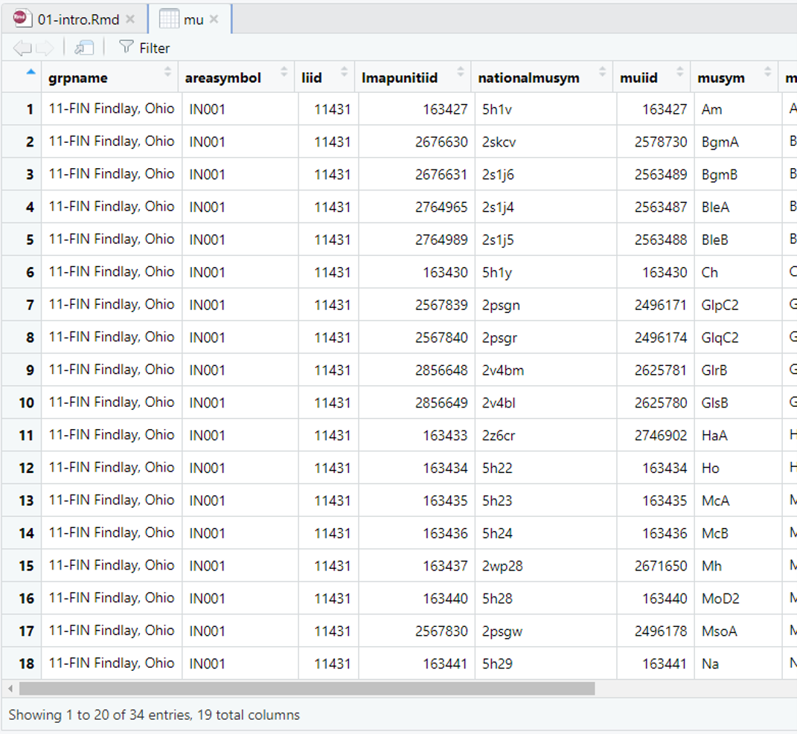
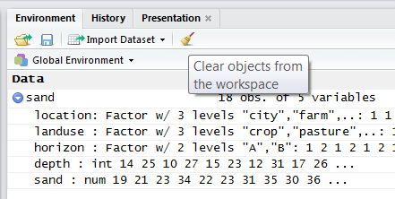
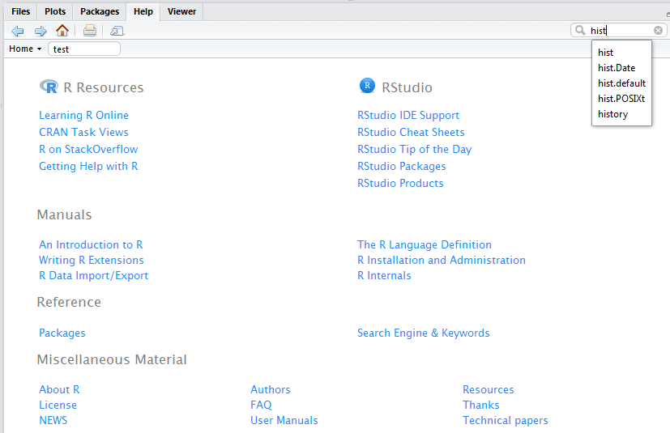

Chapter 1 Introduction to R and RStudio

1.1 Outline
- Course Overview
- Review Course Objectives
- Why is this training needed?
- Why is course organized this way?
- What is R?
- Why should I use R?
- What can R do?
- How do I get started?
- RStudio interface
- How to import, export, and view files
- How to navigate the Help tab
- What are packages?
- How to save files
1.2 Course Overview
1.2.1 Course Objectives
- Develop solutions to investigate soil survey correlation problems and update activities.
- Evaluate investigations for interpretive results and determine how to proceed.
- Create a continuous surface from point data.
- Summarize data for populations in NASIS.
- Help to pursue the question “why”
1.2.2 Why is this training needed?
- Long standing goal of the Soil Science Division to have a course in statistics (Mausbach, 2003)
- Opportunities to learn these techniques are limited, especially at the undergraduate level (Hennemann and Rossiter, 2004)
- Consistent methodology (data analysis, data population, sampling design, etc.)
- There is continually a greater need to use these techniques:
- Mapping of lands at high production rates (MacMillan et al., 2007; Kempen et al., 2012; Brevik et al., 2016)
- Ecological Sites (Maynard et al., 2019)
- Soil survey refinement (disaggregation) (Chaney et al., 2016; Ramcharan et al., 2017)
1.2.3 Why is course organized this way?
- Our best judgment for assembling into 24 hours what could be 6 University level courses
- Mixture of slides and script enabled web pages is new for NRCS
- The web content is a long-term investment and should serve as a permanent reference
- Feel free to provide guidance for improving the class for future offerings
1.3 What is R?
R is a free, open-source software and programming language developed in 1995 at the University of Auckland as an environment for statistical computing and graphics (Ikaha and Gentleman, 1996). Since then R has become one of the dominant software environments for data analysis and is used by a variety of scientific disiplines, including soil science, ecology, and geoinformatics (Envirometrics CRAN Task View; Spatial CRAN Task View). R is particularly popular for its graphical capabilities, but it is also prized for it’s GIS capabilities which make it relatively easy to generate raster-based models. More recently, R has also gained several packages which are designed specifically for analyzing soil data.
- a software environment:
- statistics
- graphics
- programming
- calculator
- GIS
- a language to explore, summarize, and model data
- functions = verbs
- objects = nouns

1.3.1 Why Should I Learn R?
While the vast majority of people use Microsoft Excel for data analysis, R offers numerous advantages, such as:
Cost. R is free! (“Free as in free speech, not free beer.”)
Reproducible Research (self-documenting, repeatable)
- repeatable:
- code + output in a single document (‘I want the right answer, not a quick answer’ - Paul Finnell)
- easier the next time (humorous example)
- numerous Excel horror stories of scientific studies gone wrong exist (TED Talk)
- scalable: applicable to small or large problems
- repeatable:
R in a Community
Learning Resources (quantity and quality)
R is ‘becoming’ the new norm (paradigm shift?) “If we don’t accept these challenges, other who are less qualified will; and soil scientists will be displaced by apathy.” (Arnold and Wilding, 1992)
While some people find the use of a commandline environment daunting, it is becoming a necessary skill for scientists as the volume and variety of data has grown. Thus scripting or programming has become a third language for many scientists, in addition to their native language and disipline specific terminology. Other popular programming languages include: SQL (i.e. NASIS), Python (i.e. ArcGIS), and JavaScript.

ODBC and GDAL link R to nearly all possible formats/interfaces
1.3.2 What can R do?
1.3.3 Packages
- Base R (functionality is extended through packages)
- basic summaries of quantitative or qualitative data
- data exploration via graphics
- GIS data processing and analysis
- Soil Science R Packages
- aqp - visualization, aggregation, classification
- soilDB - access to commonly used soil databases
- soilReports - handful of report templates
- soiltexture - textural triangles
- Ecology R packages
1.3.3.1 Soil Science Applications
1.3.3.1.1 Create Maps

1.3.3.1.2 Draw Soil Profiles

1.3.3.1.3 Draw Depth Plots

1.3.3.1.4 Estimate the Range in Characteristics (RIC)
| variable | genhz | pct10 | median | pct90 |
|---|---|---|---|---|
| clay | A | 13 | 16 | 22 |
| clay | BAt | 16 | 19 | 25 |
| clay | Bt1 | 18 | 24 | 32 |
| clay | Bt2 | 22 | 30 | 44 |
| clay | Cr | 15 | 15 | 15 |
| phfield | A | 6 | 6 | 7 |
| phfield | BAt | 5 | 6 | 6 |
| phfield | Bt1 | 5 | 6 | 7 |
1.4 RStudio: An Integrated Development Environment (IDE) for R
RStudio is an integrated development environment (IDE) that allows you to interact with R more readily. RStudio is similar to the standard RGui, but is considerably more user friendly. It has more drop-down menus, windows with multiple tabs, and many customization options. The first time you open RStudio, you will see three windows. A forth window is hidden by default, but can be opened by clicking the File drop-down menu, then New File, and then R Script.. Detailed information on using RStudio can be found at at RStudio’s Website.

| RStudio Windows / Tabs | Location | Description |
|---|---|---|
| Console Window | lower-left | location were commands are entered and the output is printed |
| Source Tabs | upper-left | built-in text editor |
| Environment Tab | upper-right | interactive list of loaded R objects |
| History Tab | upper-right | list of key strokes entered into the Console |
| Files Tab | lower-right | file explorer to navigate C drive folders |
| Plots Tab | lower-right | output location for plots |
| Packages Tab | lower-right | list of installed packages |
| Help Tab | lower-right | output location for help commands and help search window |
| Viewer Tab | lower-right | advanced tab for local web content |
1.4.1 USDA Computer Setup
R and RStudio have been installed on all USDA computers that have NASIS installed. R and RStudio are typically updated and CCE-approved once a year.
The versions on USDA machines may be one to three releases behind the latest version available for public download. Having an outdated version of R rarely creates a problem, although warnings will appear. It is generally best to update to the latest version that is generally available in the Software Center.
1.4.2 Basic Tips for using R
R is command-line driven. It requires you to type or copy-and-paste commands after a command prompt (>) that appears when you open R. This is called the “Read-Eval-Print-Loop” or REPL. After typing a command in the R console and pressing Enter on your keyboard, the command will run.
If your command is not complete, R issues a continuation prompt (signified by a plus sign:
+).R is case sensitive. Make sure your spelling and capitalization are correct.
Commands in R are also called functions. The basic format of a function in R is:
object <- function.name(argument_1 = data, argument_2 = TRUE).The up arrow (^) on your keyboard can be used to bring up previous commands that you’ve typed in the R console.
The
$symbol is used to select a particular column within the table (e.g.,table$column).Any text that you do not want R to act on (such as comments, notes, or instructions) needs to be preceded by the
#symbol (a.k.a. hash-tag, comment, pound, or number symbol). R ignores the remainder of the script line following#.
For example:

1.4.3 Working Directories
1.4.3.1 Setting the Working Directory
Before you begin working in R, you should set your working directory (a folder to hold all of your project files); for example, “C:\workspace2\…”.
To change the working directory in RStudio, select main menu Session >> Set Working Directory >> …. Or, from the “Files” tab click More >> Set As Working Directory to use the current location of the “Files” tab as your working directory.

Setting the working directory via the menus is the same as doing it in the Console with the setwd() command:
This directory is where all your input data should be stored and also is the default location for plot files and other output.
Essentially, you want to have the inputs for your code to be found in the working directory so that you can refer to them using relative file paths. Relative file paths make it easier if you move the folder containing your script(s) around. Or, if you share it with someone else, they will have little issue getting your code to work on their own file system.
NOTE: Beware when specifying any file paths that R uses forward slashes / instead of back slashes \. Back slashes are reserved for use as an escape character.
To check the file path of the current working directory (which should now be “C:\workspace2”), type:
1.4.3.2 RStudio Projects (.Rproj files)
You can also manage your working directory using RStudio Projects. An RStudio Project file (.Rproj) is analogous to, for example, a .mxd file for ArcMap. It contains information about the specific settings you may have set for a “project”.
You open or create projects using the drop down menu in the top right-hand corner of the RStudio window (shown below)
RStudio Project Menu
Here is what a typical Project drop-down menu looks like:

RStudio Project Menu (expanded)
You can create new projects from existing or new directories with “New Project…”.
When you click “Open Project…”, your working directory is automatically set to the .Rproj file’s location – this is extremely handy
Any projects you have created/used recently will show up in the “Project List”
Keeping working directories simple and specific to a single “project” is a good practice that helps keeps your code and input data organized, and helps you come back to a project after some time away from it.
1.4.4 Data Management in RStudio
1.4.4.1 Importing Data
After your working directory is set, you can import data from .csv, .txt, etc. One basic command for importing data into R is read.csv(). The command is followed by the file name and then some optional instructions for how to read the file.
First, create an example file by copying the contents below. Paste the content into Notepad and save the file as sand_example.csv in your C:\workspace2 folder.
location,landuse,horizon,depth,sand
city,crop,A,14,19
city,crop,B,25,21
city,pasture,A,10,23
city,pasture,B,27,34
city,range,A,15,22
city,range,B,23,23
farm,crop,A,12,31
farm,crop,B,31,35
farm,pasture,A,17,30
farm,pasture,B,26,36
farm,range,A,15,25
farm,range,B,24,29
west,crop,A,13,27
west,crop,B,29,25
west,pasture,A,11,21
west,pasture,B,31,26
west,range,A,14,23
west,range,B,24,24 This dataset can either be imported into R using the Import Dataset button from the Environment tab, or by typing the following command into the R console:
sand <- read.csv("C:/workspace2/sand_example.csv")
# if your workspace was already set you could simply use the filename, like so
sand <- read.csv("sand_example.csv")1.4.4.1.1 Note on Microsoft Excel files
R can import Excel files, but generally speaking it is a bad idea to use Excel. Excel has a dangerous default which automatically converts data with common notations to their standard format without warning or notice.
For example, the character “11-JUN” entered into a cell automatically becomes the date 6/11/2017, even though the data is still displayed as 11-JUN. The only way to avoid this default behavior is to manually import your data into Excel via the Data Tab>Get External Data Ribbon, and manually set the data type of all your columns to text.
Failure to do so has resulted in numerous retracted research articles (Washington Post Article).
1.4.4.2 Exporting Data
To export data from R, use the command write.csv() function. Since we have already set our working directory, R automatically saves our file into the working directory.
1.4.4.3 Viewing and Removing Data
Once the file is imported, it is imperative that you check to ensure that R correctly imported your data. Make sure numerical data are correctly imported as numerical, that your column headings are preserved, etc. To view data simply click on the sand dataset listed in the Environment tab. This will open up a separate window that displays a spreadsheet like view.

Additionally you can use the following functions to view your data in R.
| Function | Description |
|---|---|
print() |
prints the entire object (avoid with large tables) |
head() |
prints the first 6 lines of your data |
str() |
shows the data structure of an R object |
names() |
lists the column names (i.e., headers) of your data |
ls() |
lists all the R objects in your workspace directory |
Try entering the following commands to view the sand dataset in R:
A data object is anything you’ve created or imported and assigned a name to in R. The Environment tab allows you to see what data objects are in your R session and expand their structure. Right now sand should be the only data object listed. If you wanted to delete all data objects from your R session, you could click the broom icon from the Environments tab. Otherwise you could type:

1.4.5 Getting Help
R has extensive documentation, numerous mailing lists, and countless books (many of which are free and listed at end of each chapter for this course).
To learn more about the function you are using and the options and arguments available, learn to help yourself by taking advantage of some of the following help functions in RStudio:
- Use the Help tab in the lower-right Window to search commands (such as hist) or topics (such as histogram).

- Type
help(read.csv) or ?read.csvin the Console window to bring up a help page. Results will appear in the Help tab in the lower right-hand window. Certain functions may require quotations, such ashelp("+").
# Help file for a function
help(read.csv) # or ?read.csv
# Help files for a package
help(package = "soiltexture")1.4.5.1 Exercise: Examine the read.csv() function
Read the help file for the read.csv() function. How would how you would disable the first row in the sand dataset from being intrepreted as a header? Report your answer to your mentor.
1.4.6 Packages
Packages are collections of additional functions that can be loaded on demand. They commonly include example data that can be used to demonstrate those functions. Although R comes with many common statistical functions and models, most of our work requires additional packages.
1.4.6.1 Installing Packages
To use a package, you must first install it and then load it. These steps can be done at the command line or using the Packages Tab. Examples of both approaches are provided below. R packages only need to be installed once (until R is upgraded or re-installed). Every time you start a new R session, however, you need to load every package that you intend to use in that session.
Within the Packages tab you will see a list of all the packages currently installed on your computer, and 2 buttons labeled either “Install” or “Update”. To install a new package simply select the Install button. You can enter install one or more than one packages at a time by simply separating them with a comma.

To find out what packages are installed on your computer, use the following commands:
One useful package for soil scientists is the soiltexture package. It allows you to plot soil textural triangles. The following command shows how to install this package if you do not have currently have it downloaded:
1.4.6.2 Loading Packages
Once a package is installed, it must be loaded into the R session to be used.
You can also load packages using the Packages Tab, by checking the box next to the package name. Documentation about the soiltexture package is available from the help functions in R.
This help command sends you to a webpage. Scroll down and select the link “TT.plot”. This link brings up a webpage that has instructions on how to use the TT.plot() function in R.
The basic usage of the TT.plot() function is: TT.plot(class.sys, tri.data). The “class.sym” argument specifies a character string naming the textural classificaiton system.
# Copied from soiltexture vignette
# Create a dummy data frame of soil textures:
example <- data.frame(
CLAY = c(05, 60, 15, 05, 25, 05, 25, 45, 65, 75, 13, 47),
SILT = c(05, 08, 15, 25, 55, 85, 65, 45, 15, 15, 17, 43),
SAND = c(90, 32, 70, 70, 20, 10, 10, 10, 20, 10, 70, 10),
OC = c(20, 14, 15, 05, 12, 15, 07, 21, 25, 30, 05, 28)
)
TT.plot(class.sys = "USDA-NCSS.TT", tri.data = example)
For more examples see the the soiltexture vignette. Vignettes are a short tutorials that provide detailed examples and descriptions of packages. Unfortunately not all packages come with a vignette.
1.4.7 Writing Scripts
RStudio’s Source Tabs serve as a built-in text editor. Prior to excuting R functions at the Console, commands are typically written down (or scripted). Scripting is essentially showing your work.
The sequence of functions necessary to complete a task are scripted in order to document or automate a task.
While scripting may seems cumbersome at first, it ultimately saves time in the long run, particularly for repetitive tasks (humorous YouTube Video on Scripting).
Benefits include:
- allows others to reproduce your work, which is the foundation of science
- serves as instruction/reminder on how to perform a task
- allows rapid iteration, which saves time and allows the evaluation of incremental changes
- reduces the chance of human error
1.4.7.1 Basic Tips for Scripting
To write a script, simply open a new R script file by clicking File>New File>R Script. Within the text editor type out a sequence of functions.
- Place each function (e.g.
read.csv()) on a separate line. - If a function has a long list of arguments, place each argument on a separate line.
- A command can be excuted from the text editor by placing the cursor on a line and typing Crtl + Enter, or by clicking the Run button.
- An entire R script file can be excuted by clicking the Source button.

1.4.8 Saving R Files
In R, you can save several types of files to keep track of the work you do. The file types include: workspace, script, history, and graphics. It is important to save often because R, like any other software, may crash periodically.
Such problems are especially likely when working with large files. You can save your workspace in R via the command line or the File menu.
1.4.8.1 R script (.R)
An R script is simply a text file of R commands that you’ve typed.
You may want to save your scripts (whether they were written in R Editor or another program such as Notepad) so that you can reference them in the future, edit them as needed, and keep track of what you’ve done.
To save R scripts in RStudio, simply click the save button from your R script tab. Save scripts with the .R extension.
R assumes that script files are saved with only that extension. If you are using another text editor, you won’t need to worry about saving your scripts in R. You can open text files in the RStudio text editor, but beware copying and pasting from Word files as discussed below.

To open an R script, click the file icon.

1.4.8.2 Microsoft Word Files
Using Microsoft Word to write or save R scripts is generally a bad idea.
Certain keyboard characters, such as quotations "“, are not stored the same in Word (e.g. they are”left" and “right” handed). The difference is hard to distinguish, but will not run in R.
Also, pasting your R code or output into Wword documents manually is not reproducible, so while it may work in a pinch, it ultimately costs you time.
You can use the word_document Rmarkdown template to automatically “Knit” .docx files from R code using a template, which is very handy for quickly getting a nice looking document!
1.4.8.3 R Markdown (.Rmd)
Stub about the basic benefits of Rmarkdown for reproducibility, interactive reports like Shiny, but also “Notebooks” in RStudio.
This document is made in bookdown! You can make websites with blogdown, etc. You can knit visually appealing and high-quality documents into rich HTML, PDF or Word documents.
These are all based off of the powerful pandoc engine and the tools in the Rmarkdown ecosystem.
1.4.8.4 R history (.Rhistory)
An R history file is a copy of all your key strokes. You can think of it as brute force way of saving your work. It can be useful if you didn’t document all your steps in an R script file.
Like an R file, an Rhistory file is simply a text file that lists all of the commands that you’ve executed. It does not keep a record of the results.
To load or save your R history from the History Tab click the Open File or Save button. If you load an Rhistory file, your previous commands will again become available with the up-arrow and down-arrow keys.

You can also use the command line to load or save your history.
1.4.8.5 R Graphics
Graphic outputs can be saved in various formats.
| Format | Function |
|---|---|
| pdf(“graphic.pdf”) | |
| window metafile | win.metafile(“graphic.wmf”) |
| png | png(“graph.png”) |
| jpeg | jpeg(“graph.jpg”) |
| bmp | bmp(“graph.bmp”) |
| postscript | postscript(“graph.ps”) |
To save a graphic: (1) Click the Plots Tab window, (2) click the Export button, (3) Choose your desired format, (3) Modify the export settings as you desire, and (4) click Save.

The R command for saving a graphic is:
The first line of this command creates a blank file named sand with a JPEG extension. The second line plots the data object that you want to create a graphic of (here it is conveniently the same name as the JPEG file we are creating). The third line closes the graphics device.
1.5 Review
Given what you now know about R, try to answer the following questions:
Can you think of a situation where an existing hypothesis or convientional wisdom was not repeatable?
What are packages?
What is GitHub?
Where can you get help?
What does the file .Rprofile do?
What do you hope to get out of this class?
1.6 Additional Reading (Introduction)
- Introductory R Books
- Advanced DSM R Books
- Soil Science R Applications
- Soil Sciences and Statistics Review Articles
- Arkely, R., 1976. Statistical Methods in Soil Classification Research. Advances in Agronomy 28:37-70. https://www.sciencedirect.com/science/article/pii/S0065211308605520
- Mausbach, M., and L. Wilding, 1991. Spatial Variability of Soils and Landforms. Soil Science Society of America, Madison. https://dl.sciencesocieties.org/publications/books/tocs/sssaspecialpubl/spatialvariabil
- Wilding, L., Smeck, N., and G. Hall, 1983. Spatial Variability and Pedology. In : L. Widling, N. Smeck, and G. Hall (Eds). Pedogenesis and Soil Taxonomy I. Conceps and Interactions. Elseiver, Amsterdam, pp. 83-116. https://www.sciencedirect.com/science/article/pii/S0166248108705993
This document is based on aqp version 1.27, soilDB version 2.5.9, and sharpshootR version 1.6.6.
1.7 References (Introduction)
Brevik, E.C., J.A. Homburg, B.A. Miller, T.E. Fenton, J.A. Doolittle, and S.J. Indorante, 2016. Selected highlights in American soil science history from the 1980s to the mid-2010s. Catena 146:128-146.
Chaney, N., E. Wood, A.B. McBratney, J.W. Hempel, T.W. Nauman, C.W. Brungard, and N.P. Odgers, 2016. POLARIS: A 30-meter probabilistic soil series maps of the contiguous United States. Geoderma 274(15)54-67. https://www.sciencedirect.com/science/article/pii/S0016706116301434
Hennemann, G.R., and Rossiter, DG., 2004. Training needs for the next generation of soil surveyors. International Conference on Innovative Techniques in Soil Survey; 22-26 March 2004, Cha-Am, Thailand. http://www.css.cornell.edu/faculty/dgr2/Docs/ChaAm/ChaAmKeynoteHennemann.pdf
Kempen, B., D. Brus, J. Stoorvogel, G. Heuvelink, F. de Vries, 2012. Efficiency Comparison of Conventional and Digital Soil Mapping for Updating Soil Maps. Geoderma 76(6)2095-2115. https://acsess.onlinelibrary.wiley.com/doi/10.2136/sssaj2011.0424
Ihaka, R., and R. Gentleman. 1996. R: A language for data analysis and graphics. Journal of Computational and Graphical Statistics 5(3):399–314. https://www.stat.auckland.ac.nz/~ihaka/downloads/R-paper.pdf
MacMillian, R., D. Moon, and R. Coupe, 2007. Automated predictive ecological mapping in a Forest Region in B.C., Canada, 2001-2005. Geoderma 140(4)353-373. www.sciencedirect.com/science/article/pii/S0016706107001152
Mausbach, 2003. The Importance of Statistical Documentation - Keeping Soil Survey Information Relevant in the 21st Century. 2003 National Cooperative Soil Survey Conference, Plymouth, MA. https://www.nrcs.usda.gov/Internet/FSE_DOCUMENTS/nrcs142p2_051833.pdf
Ramcharan, A., T. Hengl, T. Nauman, C. Brungard, S. Waltman, S. Wills, and J. Thompson, 2017. Soil Property and Class Mas of the Conterminous United States at 100-Meter Spatial Resolution. Soil Science Society of America Journal, 82(1)186-201. https://acsess.onlinelibrary.wiley.com/doi/10.2136/sssaj2017.04.0122